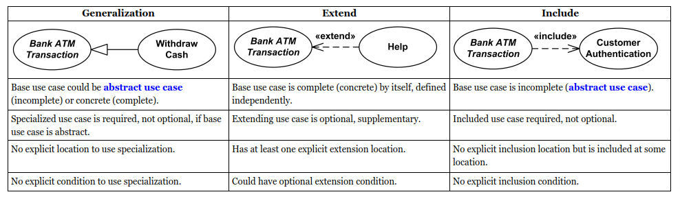

Conventions¶
This document uses the Unified Modeling Language (UML), which is a standardized graphical modeling language widely used in the field of software engineering. UML modeling provides a visual framework for describing various aspects of a software system, including its structure, behavior, and interactions with users and other systems, using a variety of modeling diagrams.
Use case diagram¶
A use case is a kind of behaviored classifier that specifies a [complete] unit of [useful] functionality performed by [one or more] subjects to which the use case applies in collaboration with one or more actors, and which [for complete use cases] yields an observable result that is of some value to those actors [or other stakeholders] of each subject.
{kind=link}
Class diagram¶
Class diagram is UML structure diagram which shows structure of the designed system at the level of classes and interfaces, shows their features, constraints and relationships - associations, generalizations, dependencies, etc.
Sequence diagram¶
Sequence diagram describes an interaction by focusing on the sequence of messages that are exchanged, along with their corresponding occurrence specifications on the lifelines.
Note
An example of stylistic conventions is using boldface and courier font to distinguish user input. Examples of syntax conventions are the rules for combining commands, keywords and parameters.